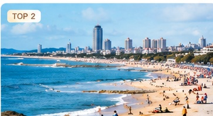
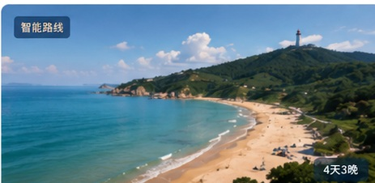
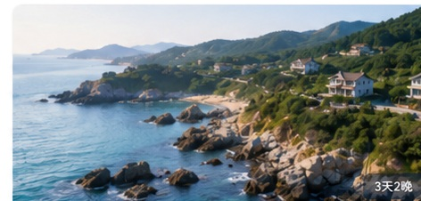
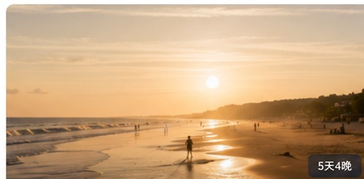

即墨古城非遗漫游
漫步即墨古城，探访非遗工坊，品味地道美食，感受千年文脉与海洋文化交融。
即墨古城古城墙 · 牌坊街
非遗工坊剪纸 · 柳腔体验
田横岛海岛风光
当地美食 · 海岸体验¥ 680 /人起
基于你的偏好，为你精选更合适的海岸旅程。
漫步即墨古城，探访非遗工坊，品味地道美食，感受千年文脉与海洋文化交融。

畅享金沙滩阳光海岸，打卡海滨地标，体验海上运动，开启海滨慢生活。
更多精选行程，发现不一样的海岸之美。


